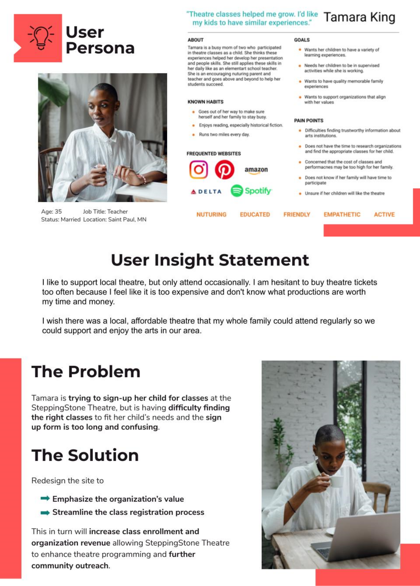
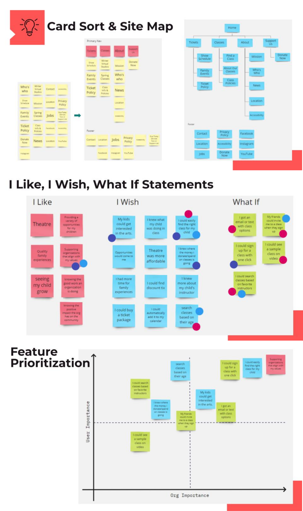
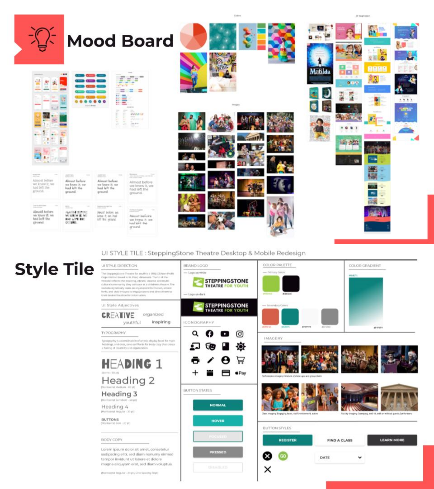
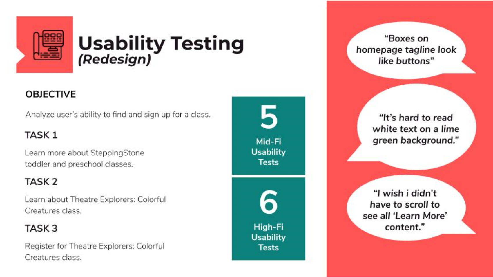
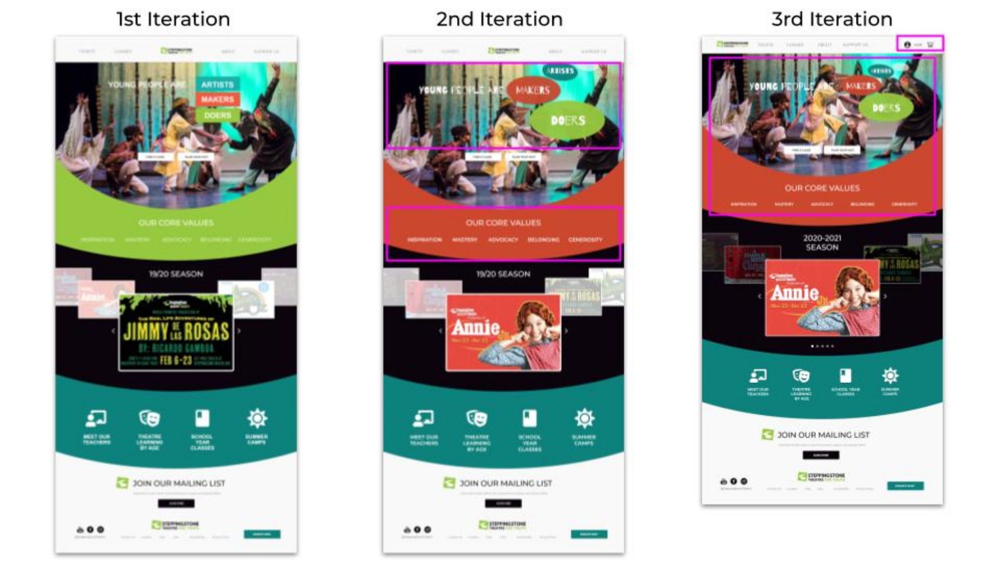
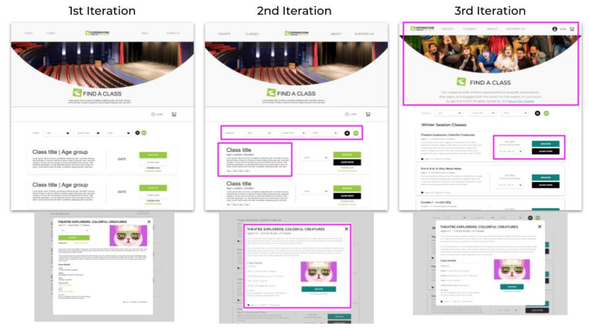
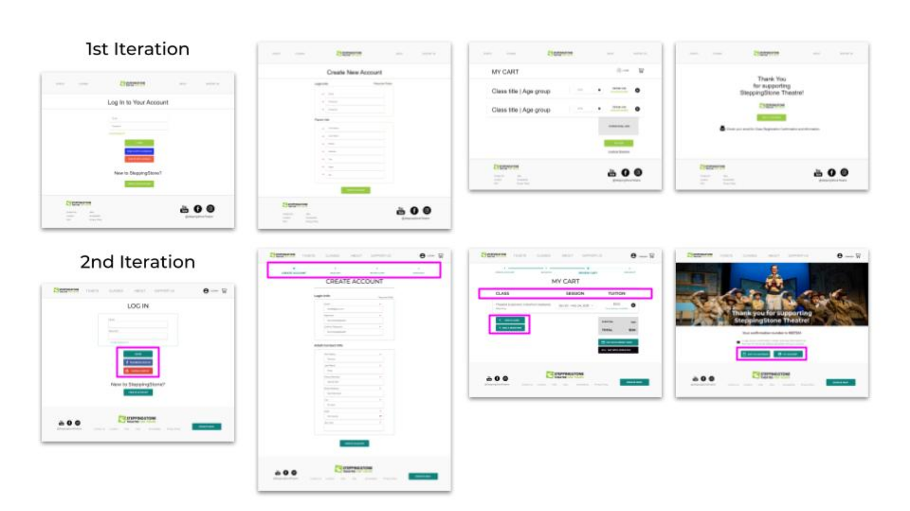

Project Overview
The redesign focused on the research of SteppingStone Theatre’s existing website, information architecture, developing a style guide and producing a hi-fi prototype with an objective to make it easier for parents to find appropriate classes and streamline the sign-up process. I worked in a group of three with a three week timeline.
About SteppingStone Theatre
SteppingStone Theatre for Youth is a performing arts non-profit located in St. Paul, Minnesota. For ages 3 to 18, SteppingStone Theatre focuses on developing the whole child through educational theater programs and fully staged productions.

Research
Heuristic Evaluation, User Interviews, Affinity Diagram, Usability Testing
We started by conducting three user interviews to discover what parents look for when selecting theater productions and classes for their family. We input our notes into Miro and organized them into an Affinity Diagram.

Next we performed a heuristic evaluation of the current website and conducted five usability tests to identify pain points while exploring and registering for classes.

Definition
User Persona, User Insight Statement, Problem & Solution
With this research in mind, we created our user persona, Tamara King. We wrote her user insight statement. Then we defined her problem and how we could transform the website to alleviate this while furthering the organization's mission.
Ideation
Card Sort, Site Map, Ideation, Feature Prioritization, Mood board, Style Tile
SteppingStone’s navigation was minimal and important items were lost in a disorganized footer. To solve this problem we completed a card sort and reorganized the navigation elements to create a new sitemap. Next we brainstormed site enhancements using the “I Like, I Wish, What If” exercise. We voted on which enhancements would best solve our users' problems and organized our favorites into a prioritization matrix.
We had a lot of fun collecting inspirational imagery and organizing them into our mood board. Our goal was to create a happy design that left the user feeling hopeful, inspired, and ready to play. Using our mood board as a guide we created a style tile full of vibrant colors and a playful display font.
Prototype
Paper Wireframe, Low-Fi Wireframes, Mid-Fi Prototype
We sketched initial concepts independently, then gathered to share and translate our concepts into a low-fi Adobe XD wireframe. Excited to execute our ideas, we applied initial styles to our wireframe creating a mid-fi prototype then completed several rounds of usability testing.

Usability Testing
Usability Testin, Iterations
Testing highlighted initial design successes as well as areas requiring additional refinement.
On the homepage users remarked that they had difficulty reading text over SteppingStone’s “lime green” brand color. We checked it’s color compliance, which indicated that it was not ADA Web compliant, so we changed it to a coral color increasing accessibility. In mid-fi testing, we noticed that users were not scrolling, so we scaled down the banner, tagline, top navigation and informational icons allowing for more content to be displayed above the fold.
On the ‘Find A Class’ page we focused on creating an accessible design. During testing users were confused by the location of the cart and login icons, so we moved them to the top navigation. This also created a better user experience by having it accessible on every page. At this time, in accordance with our ADA compliance testing, we changed the button color from lime green to dark teal.
We knew that the registration process had to be especially clean and easy to understand as theaters rely heavily on online sales to support their organization. Our registration design started very plain. Over our testing process we were able to enhance it with social login icons, a progress bar, and directional text.
Final Prototype
Final Prototype - Website, Account Creation, Class Registration
After several iterations we had transformed SteppingStone’s confusing registration form into a streamlined account creation process allowing users to easily register students for classes and/or purchase show tickets. The addition of a progress bar lets the user know where they are in the checkout process. The new ‘My Cart’ page allows users to purchase multiple items at once and gives the theater an opportunity to upsell additional experiences. The revised confirmation page provides new tools enhancing the user experience, including ‘Add to Calendar’ and ‘My Account’ buttons.